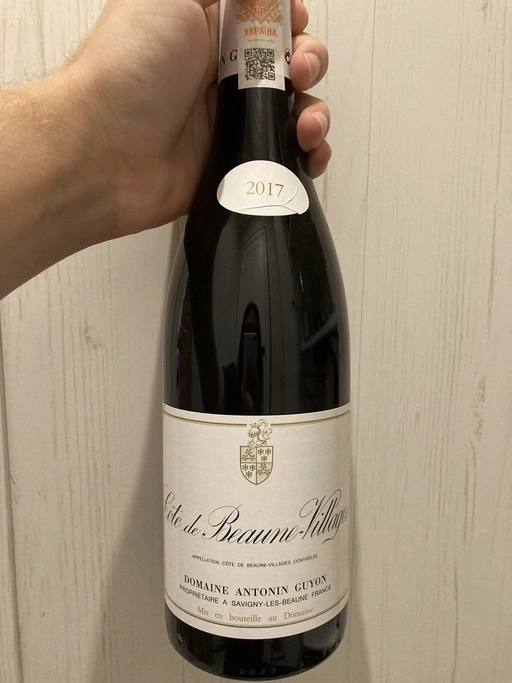

- Type
- Red Still, Dry
- Producer
- Domaine Antonin Guyon
- Vintage
- 2017
- Location
- France, Côte de Beaune-Villages AOC
- Grapes
- Pinot Noir
- Alcohol
- 13.5
- Sugar
- 1.7
- Price
- 916 UAH
- Cellar
- N/A
Ratings
2022-11-28 - 8.00
It has a curious bouquet: black currant, ripe cherry, violets, earth and mushrooms. Despite the pretentious amount of descriptors, it’s shy and restrained in the nose. Yet delicate, juicy, round and well-balanced on the palate. Medium body and long aftertaste that beautiful flows from black currant jelly to a chocolate-cherry cake. It’s not a lie this time!